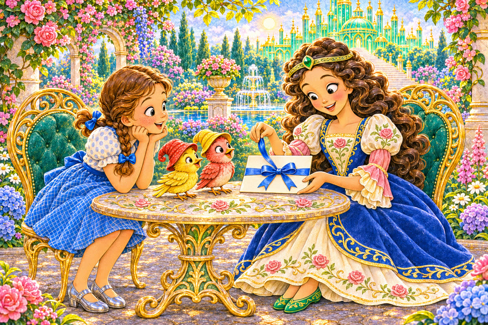
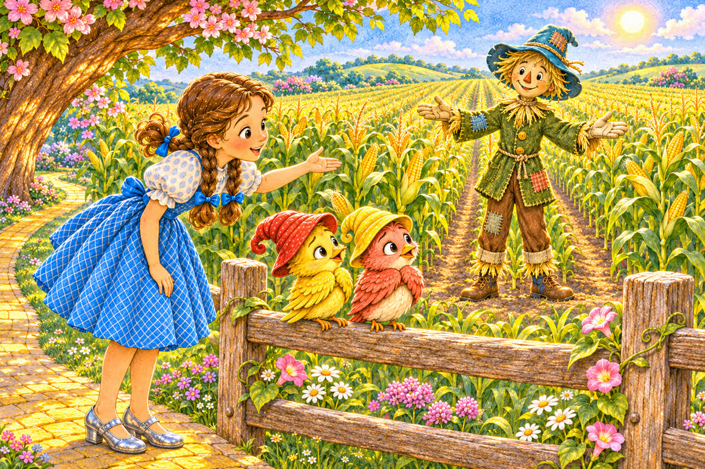
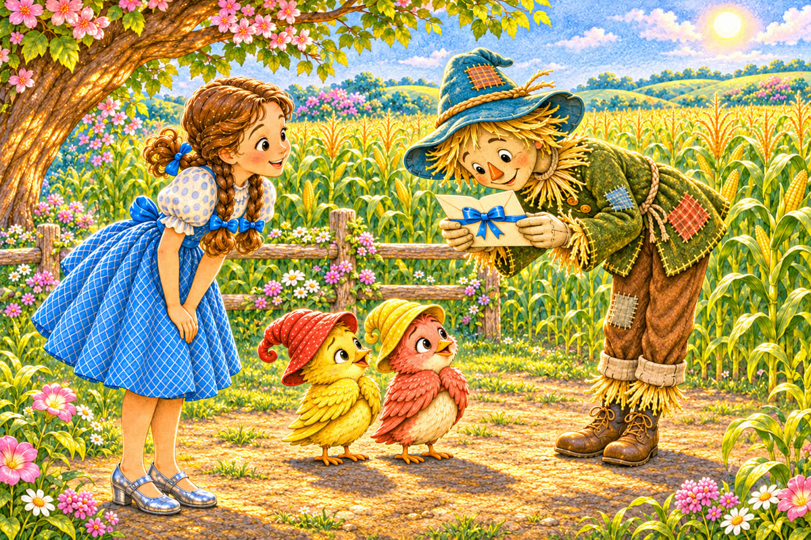
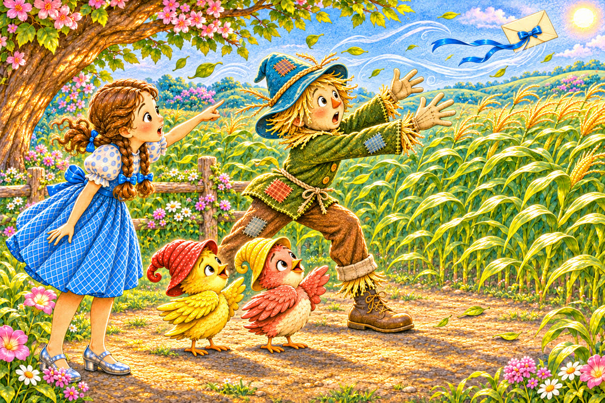
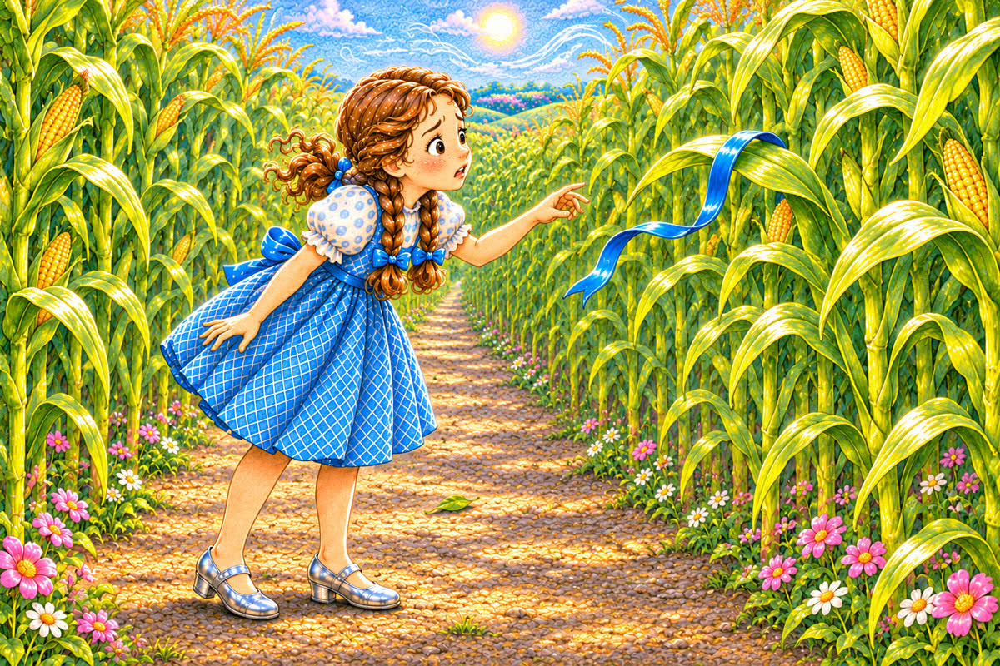
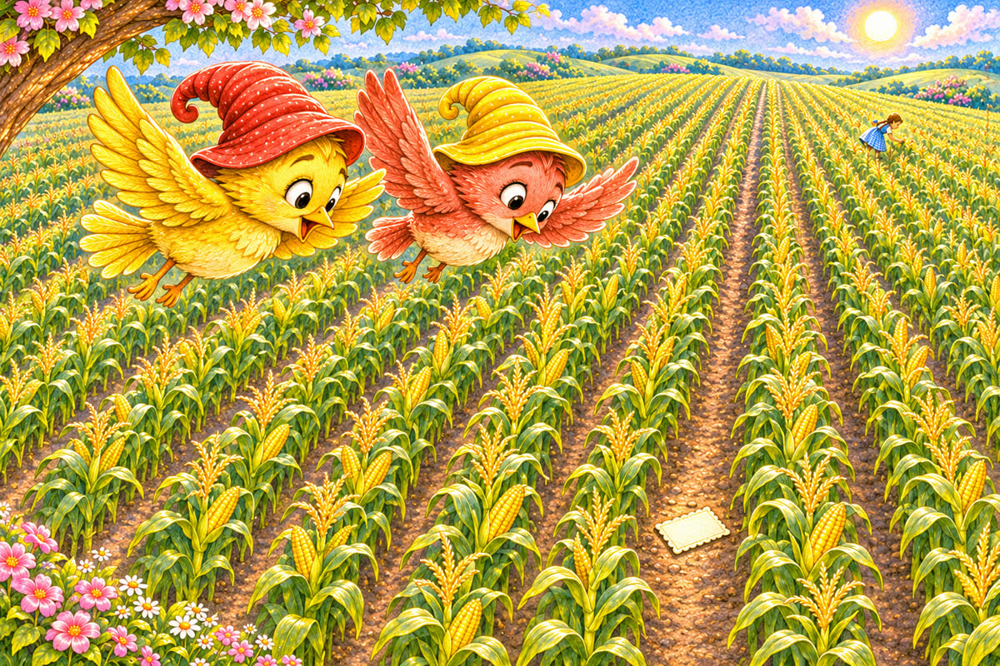
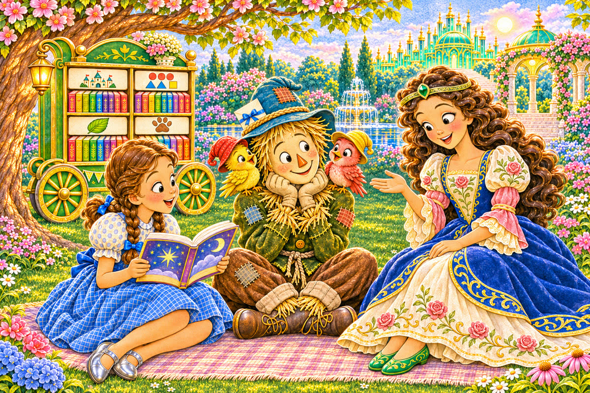

Pahina 1
Isang umaga, naghanda si Ozma ng paanyaya para kay Scarecrow.
May bagong damit siyang bughaw at puti.
Isang munting kuwento sa Lupain ng Oz
Tatlong bagong pahina muna kung gusto mo. Pagkatapos, puwedeng ang mga kard ang pumili ng mga paboritong pahina.

Isang umaga, naghanda si Ozma ng paanyaya para kay Scarecrow.
May bagong damit siyang bughaw at puti.
Itinali ni Ozma ang paanyaya sa isang lasong bughaw.
“Pakihatid ito kay Scarecrow,” sabi niya kina Dorothy at sa dalawang ibon.

Naglakad si Dorothy sa dilaw na landas.
Lumipad sa tabi niya ang ibong dilaw at ang ibong pula.
Narating nila ang taniman ng mais.
Nasa gitna ng taniman si Scarecrow.
Huminto ang dalawang ibon sa isang bakod.
“Tinatakot ng mga panakot sa ibon ang mga ibon,” sabi ng ibong pula.
“Mabait ang kaibigan nating ito,” sagot ni Dorothy.
Lumapit muna ang ibong dilaw.
Nang ngumiti si Scarecrow, sumunod ang ibong pula.

Yumuko si Scarecrow sa mga bisita.
Binasa niya ang paanyaya.
“Masaya akong pupunta,” sabi niya.

Biglang dumating ang bugso ng hangin.
Tinangay nito ang paanyaya sa kamay ni Scarecrow.
Lumipad ang puting papel sa ibabaw ng mais.

Tumakbo si Dorothy sa pagitan ng mga hanay.
Nakita niya ang lasong bughaw na sumabit sa isang dahon.
Ngunit wala roon ang paanyaya.

“Titingnan namin mula sa itaas,” sabi ng ibong dilaw.
Pumailanlang ang magkaibigang ibon.
Sa pagitan ng dalawang hanay, namataan nila ang papel.
Bumaba ang ibong pula at tumabi sa paanyaya.
Tumawag ang ibong dilaw kay Dorothy.
Sinundan ni Dorothy ang tinig at natagpuan niya ang papel.
Isiniksik ni Scarecrow ang paanyaya sa loob ng kanyang sombrero.
“Ligtas na ito,” sabi niya.
Sabay-sabay silang naglakad pabalik sa palasyo.

Sinalubong sila ni Ozma sa hardin.
Umupo si Scarecrow sa tabi ng kariton ng mga aklat.
Habang nagbabasa si Dorothy, dumapo ang dalawang ibon sa mga balikat ni Scarecrow.
Kung gusto ninyong mag-usap